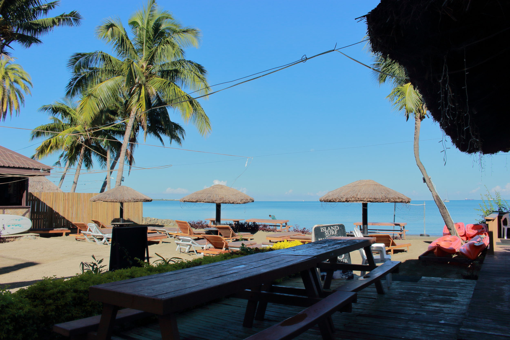

We came admist forecasts of thunderstorms. Expecting to be stuck inside our hostel watching Youtube with free Vodafine data, Nadi instead welcomed us with soft drizzles on warm waters as the sky stretched around us, circles of of clouds and colours ringing deep and vast...
i.e. a moment too good to leave the water and grab my camera for IM SORRY. (The photo above is actually from the next day and cannot compare.)
For $15, Ashleigh and I scored ourselves 2 beds in a 4 person dorm which we had to ourselves, an ensuite bathroom and free breakfast and shuttle ride from the airport. We ate them out of house and home will be eternally greatful for the free luggage storage, kayak rental, and shower even after we checked out.
After breakfast on the second morning, we transformed our skin colours by paddling out on the kayaks. With an innocent disregard for the 1-hour time limit on the kayaks (neither of us had a watch oopsies...), we took our time watching camouflaged crabs scuttle away on slipperly rocks and lay on the kayaks under coconut-heavy palms, tracing the dwindling path of a lost/freed balloon.
The rest of the day fully set in the sunburn, and we wandered around the Nadi shops, cried at Burger King because the ANZ ATM did not work, drunk kava (ground up bark with water- not drugs, tastes like the tea they give you at Vietnamese street stalls), went to a temple and reflected on how unknowledgeable we were, and talked to many souvenir merchants who all called each other scammers.
I had never been to Fiji before, but now I'm excited to go back. Though it is only 3 hours away from New Zealand, it felt completely different. The heat, plants, shops and markets reminded me of Vietnam a lot, which I didn't expect. The food is good, and the people very accomodating and friendly. See you again in July, Nadi!